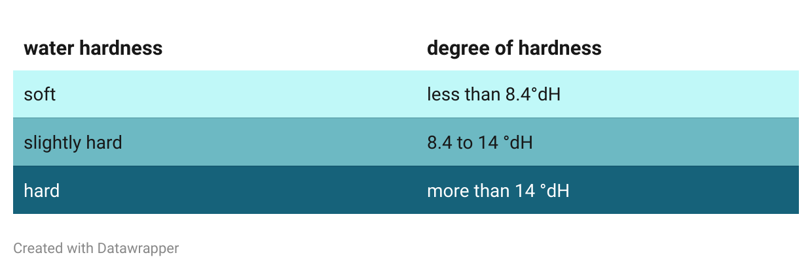
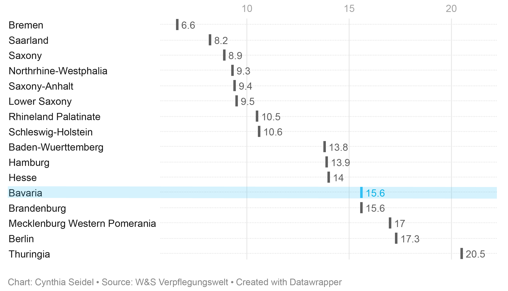

Tea water is an important factor when making tea. For perfect tea, the water should not simply
be poured boiling over the leaves (with the exception of green tea, of course). Ideally, it should
also be rich in minerals and oxygen, but low in calcium. However, even though tap water in Germany is
generally of high quality, its hardness is what can affect the flavour of tea. For water hardness is the
amount of dissolved minerals in the water.
How can water be hard?
Due to the
U.S. Geological Survey
water hardness is "not a health concern". The USGS however also describes it as a "nuisance", since it not
only effects the taste of your favorite tea. The minerals can also build up in pipes, faucets, and
water heaters and makes soaps or detergents work less well.
In Germany tap water is categorized into three degrees of hardness. It is measured in dH refering to
"Grad deutscher Härte" which translates to "degrees of German hardness".
In general, hard water is more common in those regions where underground water sources have more dissolved minerals.

Tap water in Bavaria is obtained from around 8,400 water extraction plants, including 4,300 wells,
4,100 springs and three surface water utilisation plants (reservoirs, lake and river water), reports
Wasser Bayern.
The drinking water extracted from these plants is therefore usually supplied to the municipalities without further
treatment. The latter are responsible for the administration.
The water in Bavaria is hard

On average, Bavaria has some of the hardest tap water in Germany. However, this can vary from region to
region. Even in the south of Germany, which tends to have harder water, there are towns and communities where -
if boiling water came out of the tap - tea could be brewed straight from the tap and still unfold all its
flavours as it should.